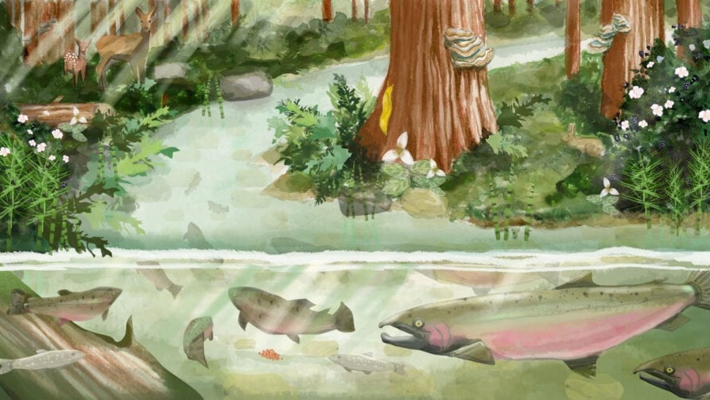

Latest News

March 28, 2024
UC Santa Cruz researchers say closer water monitoring needed as wildfires increase

March 24, 2024
UC Santa Cruz researchers study impacts of CZU fires on local streams

September 1, 2022
Groundwater pumped from subsided islands back into Delta channels can be laden with excess nitrogen transported from island soils, report the authors of a new study.

October 22, 2021
Swimming Upstream
Tess Joosse reports on the race to rescue and recover a dwindling coho salmon population after a cataclysmic wildfire. Illustrations by Sophie Wood Brinker and Kylie Kathleen Smith.